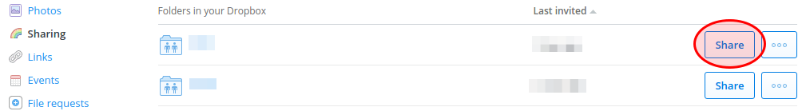

1. Drag the following link to the bookmarks bar: E-Mail folder members
2. Go to the overview of shared Dropbox folders at https://www.dropbox.com/share and open the options menu of the desired folder.
3. Once the members have loaded, click the new bookmarklet.

4. Click the newly created link (next to the member count) to E-Mail all members of the shared folder.